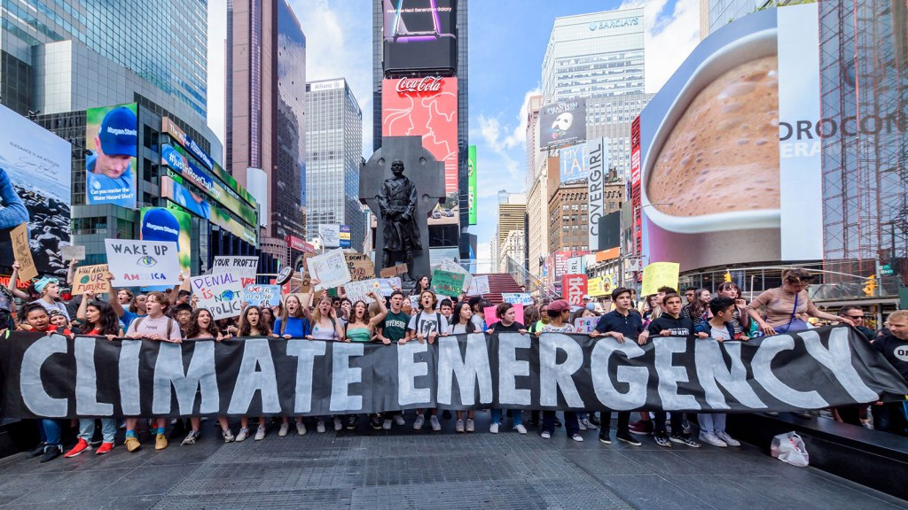
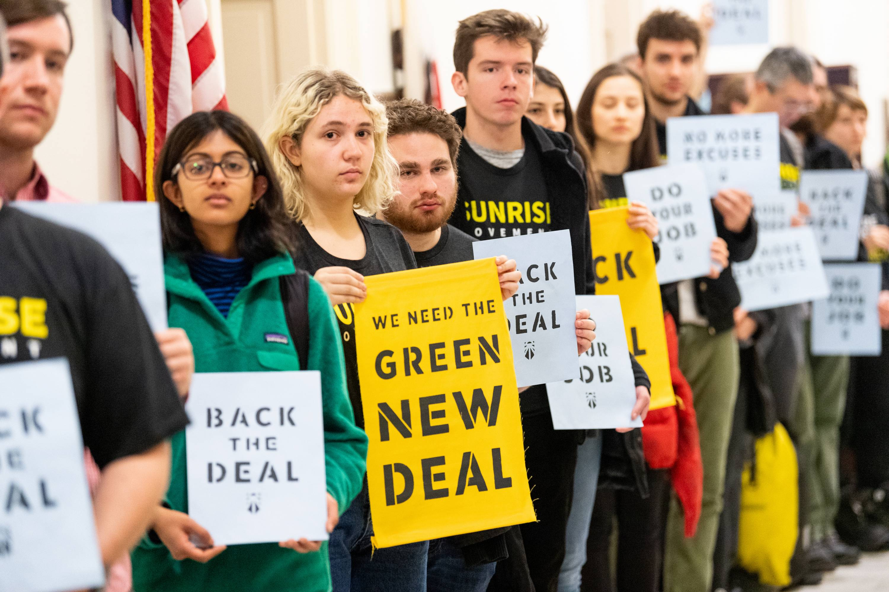

Youth Led Movement
Okay, so we're striking, but what is that accomplishing?
Chnaging the Language
One of the biggest issues scientists had about communicating how serious our effect on our climate would be is their use of scientific language, which is often very neutral and matter-of-fact. Climate activists have adopted new language to talk about this issue that the media, politicians, and the public are starting to use as well. Once we are all on the same page about the scope and urgency of this problem, we can start effecting real change. Here are some of the phrases that have been popularized by the new climate movement:
11 years left
This term has been used to try to communicate the urgency of the issue, and put a tangible deadline on it, rather than just saying soon.
CLimate crisis / emergency
Climate change doesn’t have the frightening impact or urgency of climate crisis or emergency.
Climate denier
We can no longer call someone that denies the human driven climate crisis a skeptic when so many scientists have shown that human centered climate change is real.Consequences vs. threats
Talking about threats makes it seem as though this world isn’t already feeling the negative affects of our changing climate. Consequences also makes it clear that people have caused this issue, it’s not just something external threatening our existence.
Frontline communities
This term recognizes that the marginalized and oppressed communities in todays world will feel the affects of the climate crisis most acutely, though the are often the least involved in causing the problem.
Legistlation
Sunrise movement brought the idea of a green new deal to national attention when they held a sit in at Nancy Pelosi’s office on December 10th, 2018. Four days later, 300 locally elected officials released a letter in support of a green new deal approach. That same day, a poll was released that showed that 81% of registered voters in America support a green new deal.